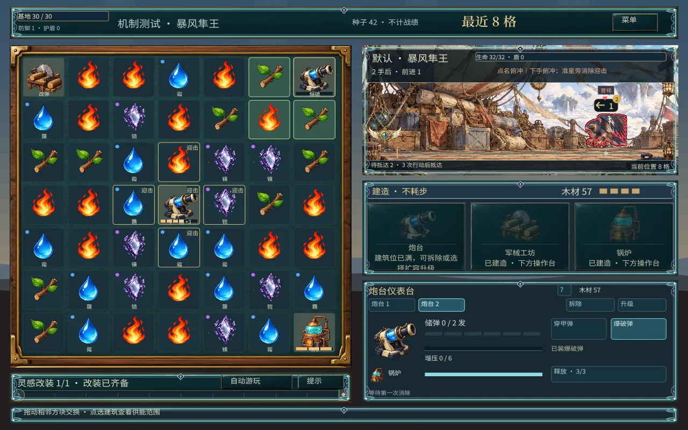
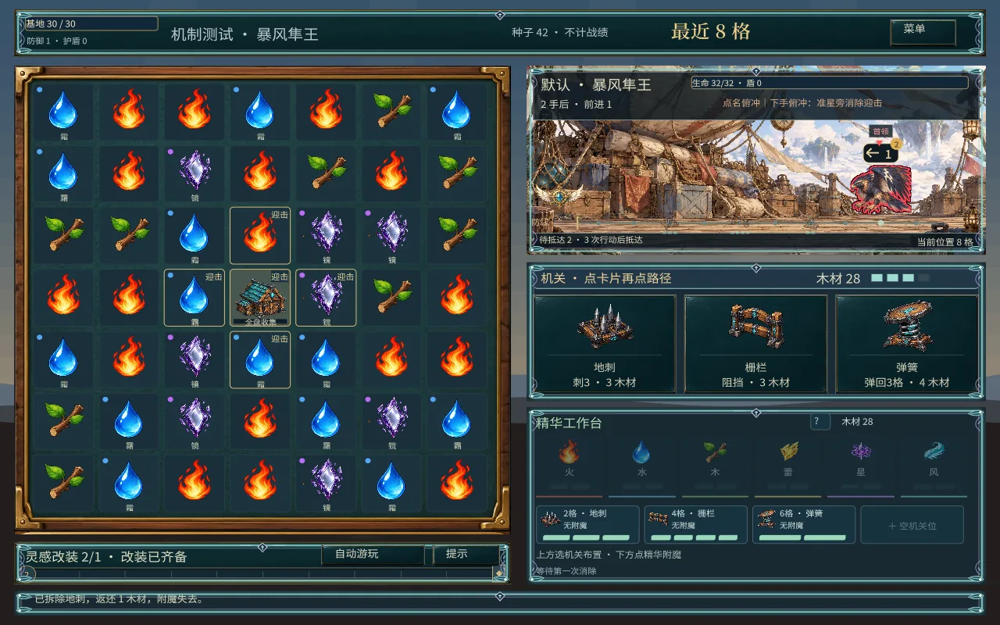

先配盘，再开战
自选元素，把供能、控制与连锁放进同一套构筑。
查看棋盘 ↗九隅
用连消攒起炮火、布下机关、培养魔像。策划重点是让同一套交换操作，转化成三种不同的战斗决策。
自选元素，把供能、控制与连锁放进同一套构筑。
查看棋盘 ↗自动炮火、机关阵地、魔像培养，资源各有去处。
查看职业 ↗利用碰撞、互斗与捕食，让战线替你分担压力。
查看战线 ↗

清完全部波次即胜，基地归零即败。场上清空但仍有增援，不算过波。可等，或提前迎战。
常规战斗按有效行动推进。深渊首领按时间走。数值仍在调，这里只写已接入的规则。